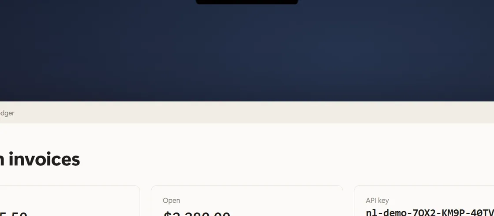

Never lose
a screenshot again.
Every capture goes to your clipboard and stays at the top of your screen for a week. Hover to copy an older shot again, drag it into a chat, or merge a few into one PDF. Emails and API keys get blurred before anyone sees them.
March invoices 1
nl-demo-7QX2-KM9P-40TV| Ada Merrow | ada@northlight.example | 4 Mar | $1,240.00 |
| Ivo Castell | ivo@castell.example | 7 Mar | $860.00 |
| June Alder | june@alder.example | 9 Mar | $2,115.50 |
| Teo Lindqvist | teo@fjordworks.example | 12 Mar | $430.00 |
Your last shots wait at the top of the screen.
Hover the ledge to see your last three shots and click one to copy it. Open the shelf for the full week of history. Tick a few shots below and press the arrow to merge them into one PDF.
Drag a shot out
Drop the PNG file straight into Slack, Discord or an email.
Float a shot over your work
Keep a reference on top of every window. Scroll to resize it and hold Ctrl while scrolling to fade it.
Paste several in order
Queue up shots and each Ctrl+V pastes the next one.

Share the screenshot, keep the secrets.
Press B on a frozen screen and Ledge Grab finds emails, card numbers, phone numbers and API keys with the text recognition built into Windows. Press B again to blur all of them. Try it here with the B key.
Invoice for March
Contact ada@northlight.example
Card 4242 4242 4242 4242
Key sk-demo_7QX2KM9P40TVaa12
Call (415) 555-0132 today
Nothing private here
Find
Ledge Grab outlines emails, card numbers, IBANs, phone numbers, JWTs and API keys. Card numbers must pass the Luhn check.
Blur
The blur replaces the pixels in the saved PNG, so nobody can read the original text back.
Erase
Smart erase paints over the text with the surrounding background.
You can also drag over any area or click a single word to blur it. Text recognition runs on your PC.
Mark it up with one key.
The screen freezes when you press the hotkey, so menus and tooltips stay in the shot. Each tool has its own key. Scroll to change the stroke width and right-click to undo. Press a key below to try a tool.
A region reaches your clipboard in under 10 ms.
Ledge Grab reads the screen through DXGI Desktop Duplication on your GPU and draws with Direct2D. It is one 3 MB executable written in Rust, with no runtime to install. At idle it uses less than 0.3% of one CPU core.
Your screen never leaves your machine.
No network access
Ledge Grab sends no requests, has no analytics and uploads no crash reports. It never stores text you copy.
Open source
GitHub Actions builds every release from the public repository and publishes SHA-256 checksums.
Plain PNG files
Shots save to Pictures in a folder for each day and app. After seven days they leave the ledge, but the files stay on disk.
Get Ledge Grab for Windows.
It is free and runs on Windows 10 and 11. The installer needs no admin rights and there is no account to create.